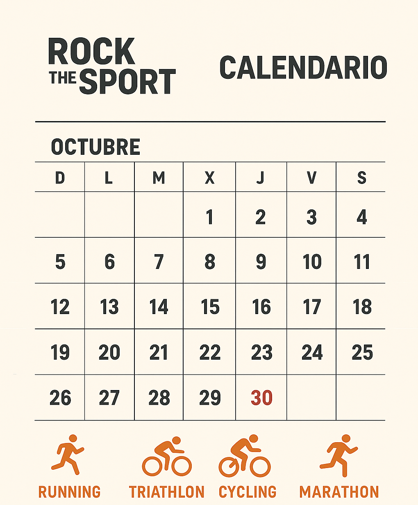

¿Quienes somos?
Rock The Sport, gestionado por el grupo 3-WAN, es una plataforma dedicada a la creación y gestión de eventos deportivos como carreras, maratones, competiciones de ciclismo y triatlones. Con el objetivo de dar un paso hacia la digitalización, nuestra web conecta a deportistas y organizadores mediante tecnología avanzada, facilitando la inscripción, seguimiento y promoción de cada evento. En Rock The Sport, transformamos la pasión por el deporte en experiencias únicas, eficientes y conectadas.
Gestión de diferentes eventos deportivos
Proximos Eventos
Puedes encontrar eventos desde este otoño y el invierno de este año,
¡gozate lo que queda del año¡
¡Ponte pilas que se esta acabando el año!

| Evento | Fecha | Ubicación |
|---|---|---|
| Maratón de Irún | 30 de Octubre de 2025 | Irún, España |
| Triatlón de Pasaia | 22 de Noviembre de 2025 | Pasaia, España |
| Carrera Behobia-San Sebastian | 5 de Diciembre de 2025 | San Sebastian, España |
Reseñas
Joaquin:
En una Maratón:Una experiencia increíble. La energía de todos los corredores fue contagiosa y la organización estuvo de diez. El recorrido fue desafiante, pero valió la pena cruzar la meta.
Manuel:
En Ciclismo:El circuito estuvo espectacular, con paisajes impresionantes y, el apoyo del público fue impresionante.
Dolores:
En un TriatlónFue un reto enorme, pero muy gratificante. La logística fue impecable y el ánimo de los voluntarios te impulsaba a no rendirte. Sin duda volveré a participar.